<
Manual Portafirmas Android
Versión 1.8.0
El primer paso para el acceso al Portafirmas Android es la descarga de la aplicación desde la Play Store. Para encontrarla podemos buscar por “Port@firmas movil”.
<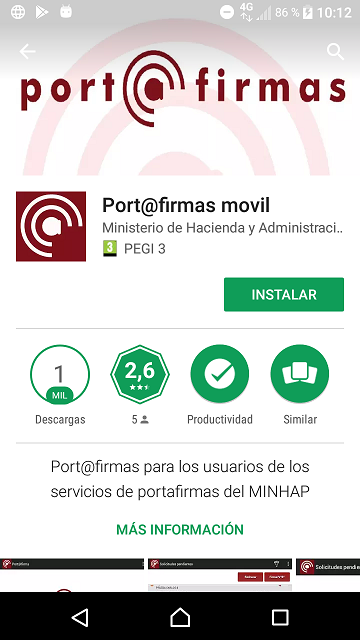
A continuación, pulsaremos sobre el botón “INSTALAR”.
Portafirmas Android
El portafirmas de Asuntos Económicos y Transformación Digital es una plataforma web para la gestión del flujo de peticiones de firma que permite a sus usuarios revisar dichas peticiones, firmarlas, darles el visto bueno o rechazarlas. El ministerio dispone de dos despliegues de su portafirmas, pero también lo distribuye para que otros organismos puedan implantarlo.
La aplicación móvil del portafirmas permite el acceso a cualquier instancia del portafirmas del ministerio, o a cualquier instancia del mismo desplegada por otros organismos. La aplicación móvil permite a sus usuarios acceder y realizar las operaciones básicas sobre las peticiones de firma de dicho usuario.
Un usuario sólo podrá acceder a una instancia del portafirmas si previamente se le ha creado una cuenta para el mismo. Cualquier persona que pueda acceder al portafirmas a través de la web podrá acceder al mismo portafirmas desde la aplicación móvil.
El portafirmas móvil utiliza certificados electrónicos reconocidos tanto para el acceso a la cuenta del usuario como para la firma de sus peticiones. Estos pueden ser:
-
Certificados locales instalados en el dispositivo.
-
Certificados en la nube de Cl@ve Permanente.
Por defecto, los accesos se realizarán mediante certificados instalados en el dispositivo, pero un usuario puede activar el uso de los certificados remotos mediante la opción de menú “Usar certificados remotos” de la pantalla principal de la aplicación móvil.
Su certificado, local o remoto, permite al portafirmas identificarle y con ello identificar su cuenta del portafirmas seleccionado. Esto quiere decir que no es necesario dar de alta este certificado en el servicio portafirmas y que, si tiene cuenta en más de un portafirmas, podrá acceder a todos ellos con el mismo certificado.
Primera ejecución
< Al
ejecutar la aplicación por primera vez se le mostrará al usuario la
ventana de presentación y el asistente de configuración del Portafirmas
móvil. Este asistente le facilitará configurar algunas de las opciones
de la aplicación:
Al
ejecutar la aplicación por primera vez se le mostrará al usuario la
ventana de presentación y el asistente de configuración del Portafirmas
móvil. Este asistente le facilitará configurar algunas de las opciones
de la aplicación:
- Selección de portafirmas: El Portafirmas móvil le permite acceder a múltiples portafirmas y ya viene configurado con la ruta de acceso a dos de ellos. Desde la primera ventana del asistente el usuario podrá seleccionar cuál de estos portafirmas debe establecerse como el por defecto o indicar que se va a utilizar otro Portafirmas distinto. El usuario podrá posteriormente cambiar entre los portafirmas configurados y agregar otros nuevos mediante la opción “Servidores Portafirmas” del menú de la pantalla principal de la aplicación. Para saber más, consulte el apartado “4.1 Selección del servidor de Portafirmas”.
<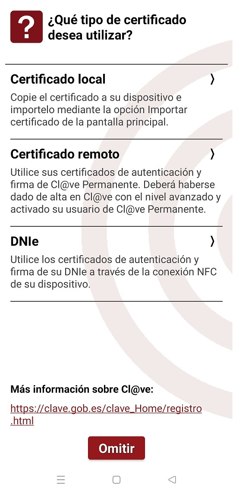
- Selección de origen del certificado: El Portafirmas móvil permite el uso tanto de certificados locales como de certificados remotos para para las operaciones de autenticación y firma. Esta pantalla del asistente le permitirá configurar si desea usar por defecto un certificado local, un certificado remoto o su DNIe. Para el uso de un certificado local deberá haber importado el certificado tal como se describe en el “ANEXO 1 Importar certificado de usuario”. Para el uso de un certificado remoto, deberá haberse registrado en Cl@ve mediante certificado electrónico o de forma presencial (https://clave.gob.es/clave_Home/registro/Como-puedo-registrarme.html) y, posteriormente, activar su usuario de Cl@ve Permanente (https://clave.gob.es/clave_Home/ Clave-Permanente/Procedimientos.html). Para usar DNIe, su dispositivo deberá contar con conexión NFC y usted disponer de un DNIe 3.0 o 4.0 con los certificados vigentes.
Acceder al Portafirmas
El Portafirmas móvil permite conectar con múltiples Portafirmas compatibles y autenticarse y firmar tanto con certificados locales como certificados remotos. Al utilizar un certificado local, se usará este para la autenticación del usuario y la firma de las peticiones. En el caso de usar certificados remotos, se utilizará Cl@ve para la autenticación (con su certificado de Cl@ve Permanente) y FIRe para la firma (con su certificado de Cl@ve Firma).
Selección del servidor de Portafirmas
El portafirmas móvil permite tener configuradas múltiples instancias de Portafirmas. Si no se seleccionó mediante el asistente a qué Portafirmas se desea acceder, se deberá hacer en este momento. La aplicación tiene configurados por defecto los dos siguientes servidores Portafirmas:
-
Portafirmas General AGE
-
Portafirmas RedSARA
Un usuario puede acceder a cualquiera de estos portafirmas, dar de alta otros, editarlos o eliminarlos.
El listado de servidores Portafirmas configurados puede verse desde la pantalla inicial de la aplicación al pulsar el botón de menú y la opción “Servidores Portafirmas”. Desde este diálogo se puede seleccionar un servidor, agregar uno nuevo, editarlos y eliminarlos.
<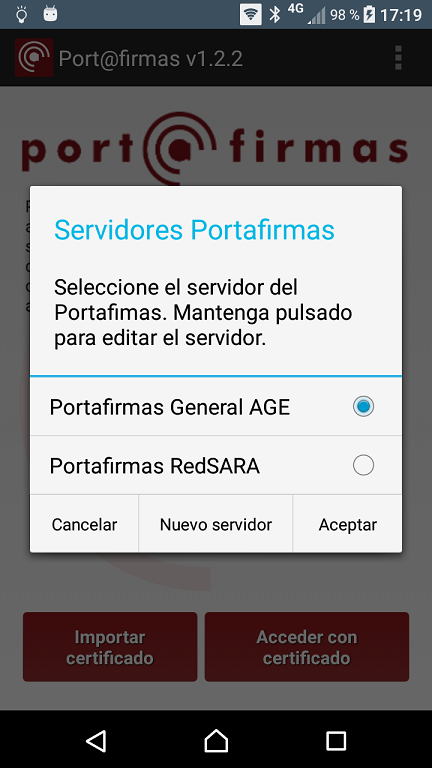
Selección del servidor
Para seleccionar a qué servidor Portafirmas deseamos acceder basta con pulsar sobre el servidor deseado. Seguidamente, pulsaremos sobre el botón “Aceptar”.
Agregar nuevo servidor
Para agregar un servidor distinto a los que vienen por defecto, pulsaremos en el botón “Nuevo servidor” del listado de servidores. En el nuevo diálogo que aparecerá se introducirá el alias o nombre con el que queremos referirnos al servidor y la URL del mismo. A continuación, pulsaremos el botón “Aceptar”.
<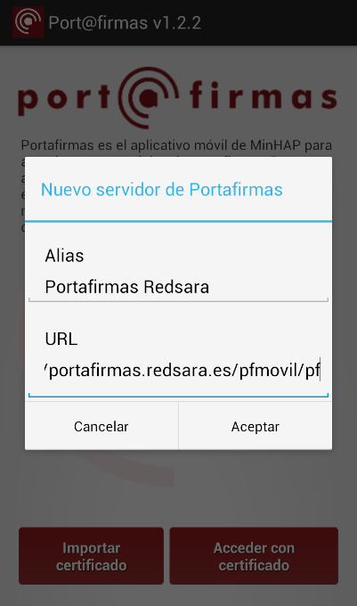
La URL de un servidor Portafirmas deberá proporcionarla el organismo responsable del mismo.
Modificar un servidor existente
Para editar un servidor que ya tenemos dado de alta en la lista de servidores, debemos mantener pulsado el elemento correspondiente hasta que se abra el dialogo de edición. En este diálogo podemos modificar el nombre y la URL del servidor. Para aplicar los cambios, pulsaremos sobre el botón “Aceptar”.
<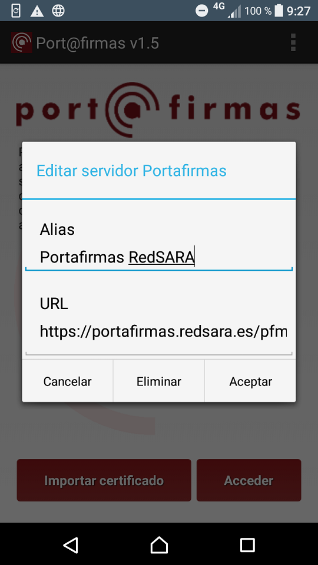
Eliminar un servidor
Para eliminar un servidor portafirmas deberemos mantener pulsado el elemento de la lista de servidores hasta que aparezca el diálogo de edición. A continuación, pulsaremos el botón “Eliminar”.
Si el usuario elimina todos los servidores de la lista, automáticamente se volverán a agregar los servidores por defecto.
Acceso con certificado local
Para acceder al portafirmas seleccionado con certificado local, deberemos disponer previamente de un certificado instalado en el dispositivo tal como se indica en el apartado ANEXO 1 Importar certificado de usuario y haber seleccionado el servidor portafirmas deseado.
Para el uso del certificado local, comprobaremos que la opción “Usar certificados remotos” del menú de la pantalla principal se encuentra desactivado. A continuación, pulsaremos el botón “Acceder”.
El sistema operativo abrirá un diálogo con los certificados instalados en el sistema en el que deberemos seleccionar aquel que se deseemos utilizar. Después deberemos pulsar el botón “Permitir”.
<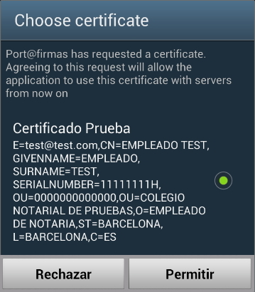
Advertencia: El certificado seleccionado es el que se utilizará tanto para la autenticación del usuario (mediante un proceso de validación realizado por el propio Portafirmas web), como para la firma de las peticiones. Por este motivo, se recomienda que se utilice siempre un certificado de firma (no repudio) para acceder a la aplicación.
Un usuario sólo podrá acceder a un servicio de portafirmas si dispone de una cuenta en el mismo. De no ser así, se producirá un error de conexión.
La aplicación móvil establece una sesión con el Portafirmas web para permitir ver y firmar las peticiones del usuario. Si el establecimiento de sesión es correcto, el usuario será redirigido a la pantalla de peticiones pendientes de firmar.
Acceso con certificado remoto (Cl@ve Permanente)
Para acceder al portafirmas seleccionado con certificado remoto, deberemos habernos dado previamente de alta en Cl@ve y activar Cl@ve Permanente. Puede obtener más información sobre los procedimientos necesarios en:
https://clave.gob.es/clave_Home/clave.html
Para configurar el Portafirmas móvil para el uso del certificado remoto, marcaremos la opción “Usar certificados remotos” del menú de la pantalla principal de la aplicación. A continuación, pulsaremos el botón “Acceder”.
La aplicación móvil accederá a su cuenta de portafirmas con certificado remoto por medio de Cl@ve Permanente que necesita que el usuario introduzca su DNI y los datos de autenticación. La aplicación mostrará para esto la página web de Cl@ve Permanente en donde el usuario podrá insertar su DNI, la contraseña de Cl@ve y, si procede, el código enviado a su teléfono por SMS.
<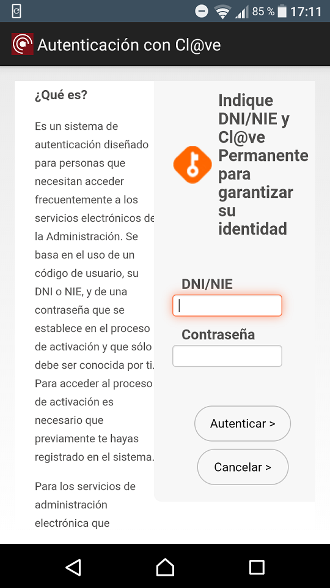 <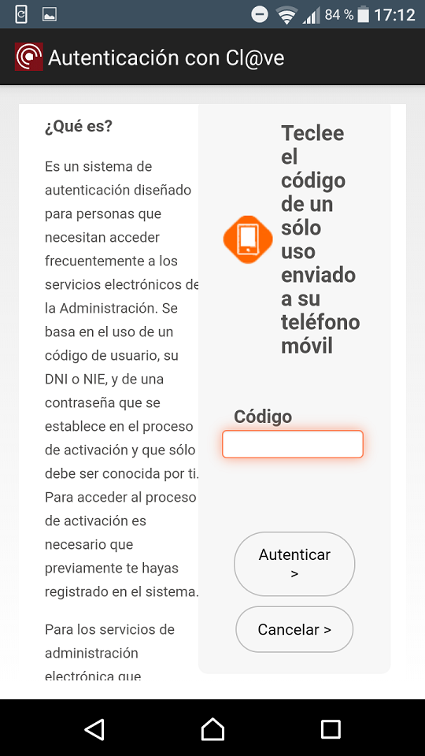
Advertencia: No todos los servicios de portafirmas permiten el uso de certificado remoto. Consulte con el proveedor de su portafirmas si tiene dudas acerca de la disponibilidad de esta opción.
Acceso con DNIe
Para acceder con su DNIe deberá disponer de un DNIe 3.0 o 4.0 con los certificados vigentes y su dispositivo móvil deberá contar con conexión NFC. En caso de que en el momento de iniciar la conexión con la tarjeta el NFC del dispositivo se encuentre apagado, se redirigirá al usuario a la pantalla de gestión de conexiones de Android y se le pedirá que lo active.
Para poder conectar con su DNIe vía NFC, será necesario que primero inserte el número CAN de su tarjeta. Puede encontrar este número de seis dígitos en la zona inferior derecha del frontal de su tarjeta.
<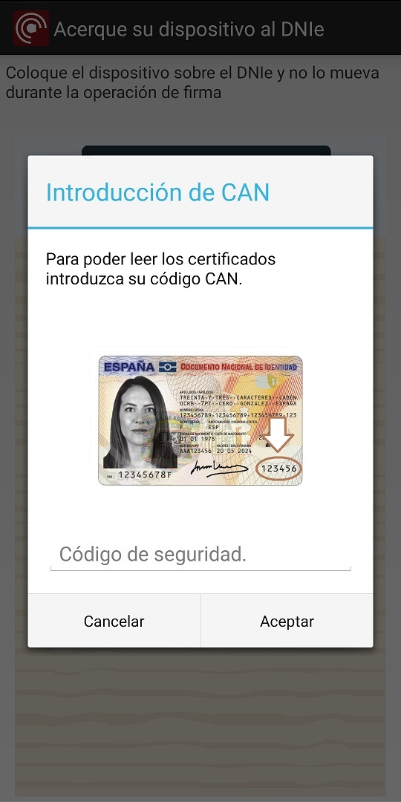 <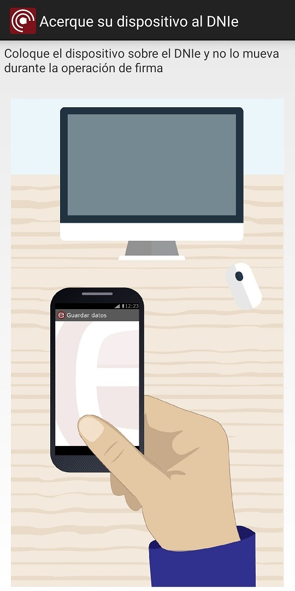
Una vez insertado el número CAN deberá acercar su DNIe al reverso de su dispositivo móvil. Cuando Android detecte la tarjeta emitirá un pitido y/o una vibración, momento en el que se iniciará la conexión.
Una vez establecida la conexión, se pedirá al usuario que inserte el PIN del DNIe para poder acceder a sus certificados.
<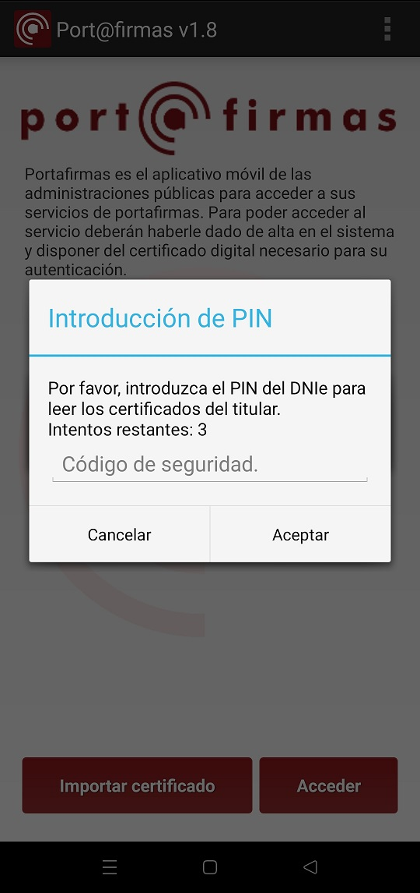
En caso de insertar incorrectamente el PIN se abortará la operación de acceso o firma. El diálogo de inserción de PIN muestra cuantos intentos de inserción de PIN tiene disponible la tarjeta. Si ese número llega a cero por haber introducido incorrectamente el PIN varias veces seguidas, su DNIe quedará bloqueado y debería acudir a una comisaría de expedición de DNIe para desbloquearlo a través de los kioscos habilitados.
La aplicación recordará el CAN y el PIN del DNIe para poder firmar las peticiones sin volverlos a solicitar mientras dure la sesión del usuario y no se interrumpa la conexión. Si en algún momento se interrumpe la conexión entre el DNIe y la aplicación, se le volverá a pedir al usuario que vuelva a acercar el DNIe al dispositivo (para lo cual es posible que primero deba separarlo si no lo estaba para que el sistema operativo vuelva a detectar la tarjeta) y se le volverá a pedir el PIN.
Selección de rol
En caso de que el usuario tenga permitido el acceso con distintos roles, tras acceder a la aplicación, se mostrará un listado con las distintas opciones disponibles.
<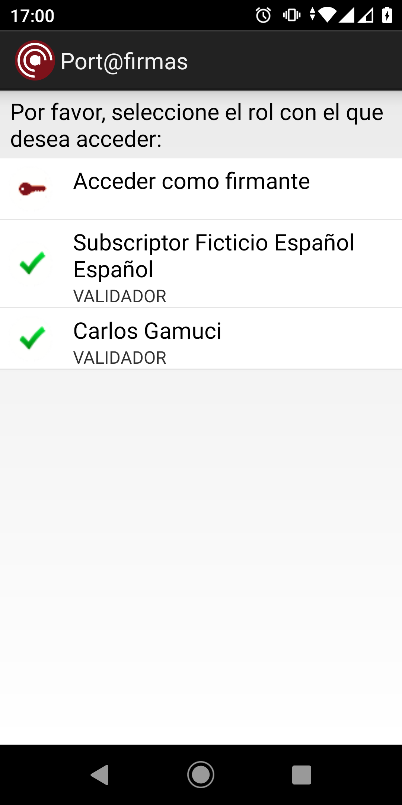
El usuario podrá seleccionar el rol con el que desea acceder a la aplicación. Una vez dentro, podrá cambiar de rol pulsando en la opción “Cambiar rol” del menú.
Bandejas de peticiones
Al entrar en el portafirmas, se accede a la pantalla que muestra la bandeja de peticiones que el usuario tiene pendientes de procesar. Las peticiones que puede ver y las acciones que puede realizar sobre ellas dependerá de si accedió como usuario firmante o como validador de otro usuario. Posteriormente el usuario podrá cambiar de rol desde la opción correspondiente del menú.
Acceso como usuario firmante
Se accede como usuario firmante cuando no se es validador de ningún otro usuario o cuando se selecciona expresamente en la pantalla de selección de rol.
Los usuarios firmantes verán por defecto el listado de peticiones que tiene pendiente de firmar o aprobar. Si hubiese peticiones próximas a caducar, se mostrarían al principio del listado:
<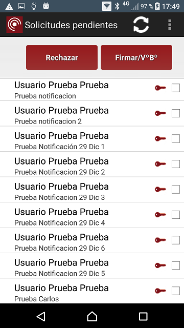 <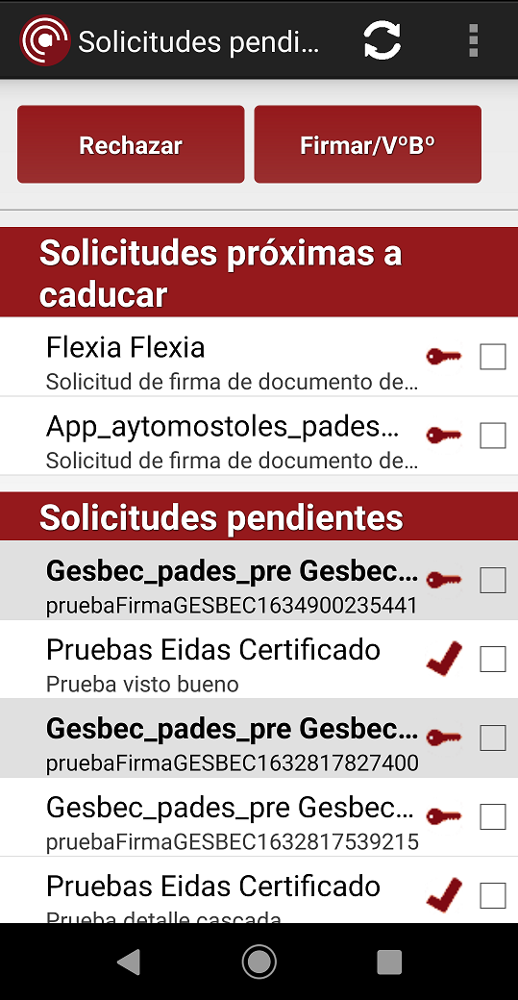
En este listado se muestran al usuario las peticiones pendientes
recibidas, quién la envío, el asunto del que trata, la criticidad y si
la petición debe firmarse
(< ) o aprobarse
(<
) o aprobarse
(< ). Se puede actualizar el
listado arrastrando la lista hacia abajo cuando ya nos encontramos en la
parte superior o mediante la opción de actualizar del menú. Para ver el
detalle de una petición se puede pulsar sobre la misma.
). Se puede actualizar el
listado arrastrando la lista hacia abajo cuando ya nos encontramos en la
parte superior o mediante la opción de actualizar del menú. Para ver el
detalle de una petición se puede pulsar sobre la misma.
Debe tenerse en cuenta que, si el usuario tiene validadores asignados, por defecto sólo se le mostrarán las peticiones que estos hayan validado previamente. Para ver todas las peticiones dirigidas a él, el usuario debe acceder al apartado de filtros mediante la opción “Filtrar” del menú de la pantalla, activarlos y seleccionar el tipo de petición “Todos los tipos”.
Para firmar o aprobar peticiones desde este listado, un usuario puede activar la casilla que se muestra a la derecha de cada petición y pulsar el botón “Firmar/VºBº”. Cuando se pulse el botón, se mostrará al usuario un resumen con el número de peticiones que se van a procesar:
<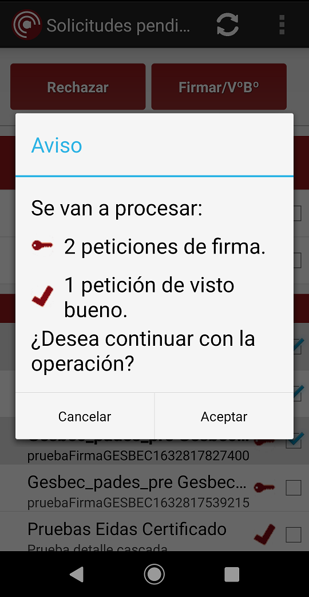
También puede rechazarlas mediante el botón “Rechazar”. Cuando se rechacen peticiones se permitirá al usuario indicar el motivo por el que se rechazan. Indicar este dato es opcional.
<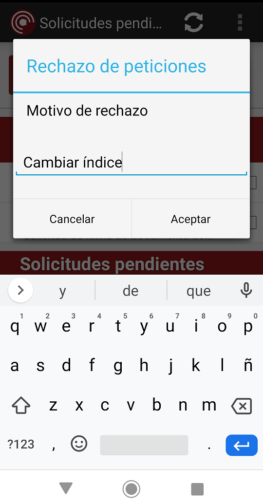
Es posible seleccionar todas las peticiones de la pantalla mediante la opción “Seleccionar todas” del menú para así procesarlas simultáneamente.
Al procesar una petición, si el proceso se realiza correctamente, la petición pasa a la bandeja de “Firmadas”. Al rechazar peticiones, estas pasan a la bandeja de “Rechazadas”. Pueden visualizarse estas bandejas de peticiones las opciones de menú “Ver solicitudes firmadas” y “Ver solicitudes rechazadas”, respectivamente.
Firma de peticiones con certificado local
La firma de peticiones con certificado local se realiza con el mismo certificado que se haya seleccionado para el acceso al Portafirmas. El uso de este certificado es transparente para el usuario.
Firma de peticiones con certificado remoto
La firma de peticiones con certificado remoto se realiza con el certificado de firma de Cl@ve Firma del usuario. Para hacer uso de este certificado se redirige al usuario a la página de FIRe desde el que puede seleccionarlo. Seguidamente deberá introducir su contraseña de Cl@ve y el código recibido por SMS a su número de móvil asociado.
<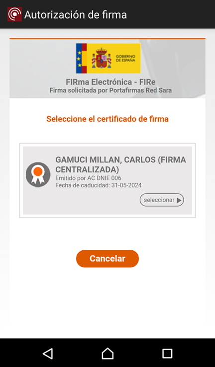 <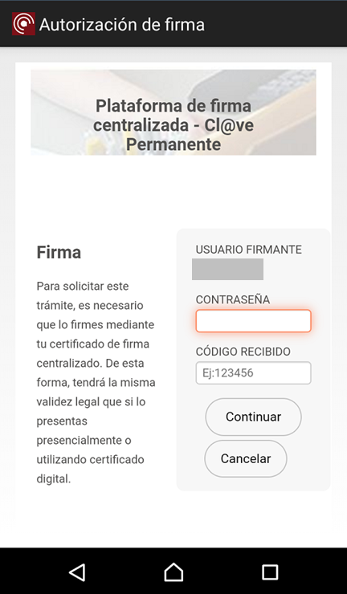
Firma de peticiones con DNIe
La firma de peticiones con DNIe se realiza con el certificado de firma del DNIe. Si no se ha interrumpido la conexión con el DNIe desde el acceso o última firma, la firma de las peticiones se realizará de forma transparente al usuario. Si se interrumpió, se pedirá al usuario que vuelva a acercar el DNIe al dispositivo y que inserte su PIN.
Acceso como usuario validador
Cuando un usuario accede como usuario validador no ve las peticiones que se le envían a él, sino las peticiones enviadas al usuario del cual es validador. Su función es la de revisar estas peticiones y validarlas para que así aparezca en la bandeja de peticiones pendientes de la persona responsable de darles visto bueno o firmarlas.
<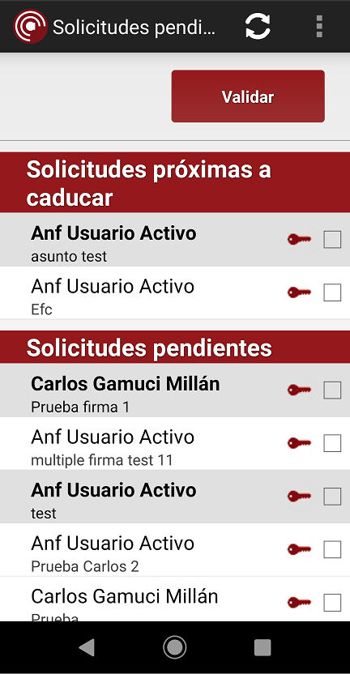
El usuario validador ve por defecto únicamente las peticiones que están pendientes de validar. Si fuese necesario ver también las peticiones ya validadas, puede cambiarlo mediante el filtro “Tipo de petición”, accesible mediante la opción “Filtrar” del menú del listado de peticiones pendientes. Se puede actualizar el listado arrastrando la lista hacia abajo cuando ya nos encontramos en la parte superior o mediante la opción de actualizar del menú.
Filtrado de peticiones
Desde cualquiera de las bandejas de peticiones podemos activar los filtros para que se muestren solamente aquellas peticiones que cumplan las condiciones establecidas en esos campos. Esto puede hacerse a través de la opción “Filtrar” del menú contextual de los listados. Este diálogo también permite seleccionar el criterio de ordenación del listado.
<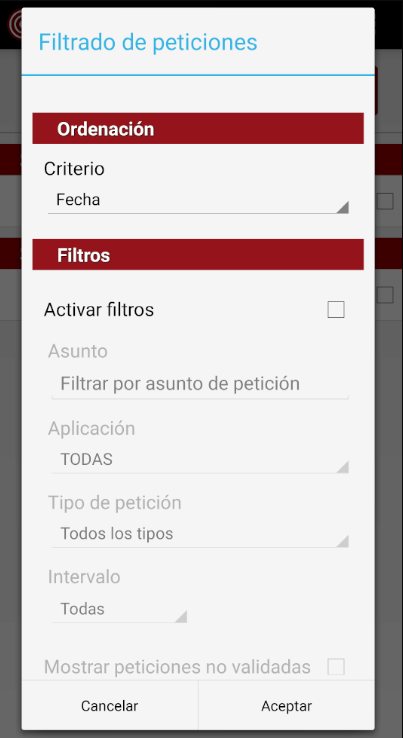
Detalle de petición
Pulsando directamente en una petición accederemos a una pantalla para ver su información. Entre ella veremos el asunto, referencia, la fecha de envío, la fecha de caducidad (si aplica), la aplicación desde la que se envía, el motivo de rechazo (si aplica), los remitentes y el mensaje asociado.
<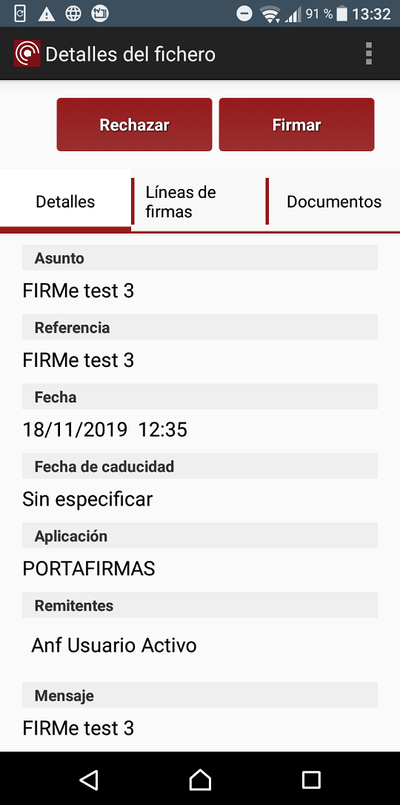
Desde esta pantalla también se puede firmar, dar visto bueno, rechazar o validar una petición pendiente a través que los botones que aparecen en la parte superior de la pantalla. Estos procesos son análogos a los realizados desde el listado de peticiones pendientes, pero afectarán únicamente a esta petición y a sus documentos.
La pestaña “Líneas de firma” muestra el flujo de vistos buenos y firmas que seguirá la petición, quienes deberán procesarla y la operación en cuestión a realizar (Firma o Visto Bueno). Cuando se indica que la firma de una petición es “en cascada”, se indica que deberá procesarla uno de los individuos de una línea de firma antes que la petición llegue a los de la siguiente línea. Cuando la petición sea “en paralelo” los individuos de las distintas líneas de firma podrán procesarla en paralelo.
<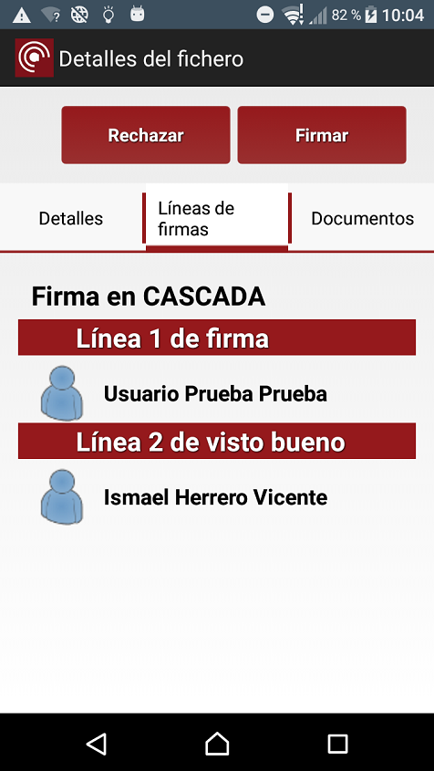
La pestaña “Documentos” contiene los documentos que se van a firmar y, si existen (y la versión del Portafirmas web al que se conecta lo soporta), los documentos anexos a la petición, los cuales no se firman nunca, pero pueden ayudar al usuario a determinar si debe firmar los documentos. Estos documentos se podrán abrir o visualizar siempre que el dispositivo disponga de una aplicación asociada al tipo de documento.
Cuando se visualice el detalle de una petición firmada se podrá también descargar las firmas generadas y visualizar los documentos con el detalle de las firmas (informes de firma).
<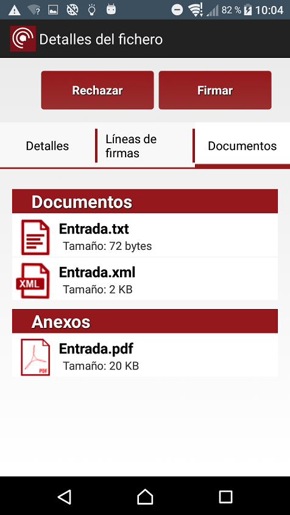
Gestión de autorizaciones y validadores
La aplicación móvil permite gestionar las autorizaciones y los validadores del usuario cuando se accede a una versión del Portafirmas que soporte esta funcionalidad. De ser el caso, podremos hacerlo a través de la opción “Configuración” del menú del listado de peticiones. Esta opción sólo está disponible cuando se accede como usuario firmante.
Gestión de autorizaciones
El listado de autorizaciones muestra todas aquellas autorizaciones que hemos concedido o que nos han concedido a nosotros, independientemente del estado en el que se encuentren.
De cada autorización del listado podemos ver:
-
Mediante el primer icono, si la autorización se ha enviado (<) o recibido (<).
-
Mediante el segundo icono, el estado de la petición: activa (<), revocada (<) o pendiente de aprobar (<).
-
El emisor o receptor de la autorización, según si la hemos recibido o enviado, respectivamente.
-
La fecha de revocación de la autorización si ya no está activa o si está activa, pero tiene fecha de caducidad.
<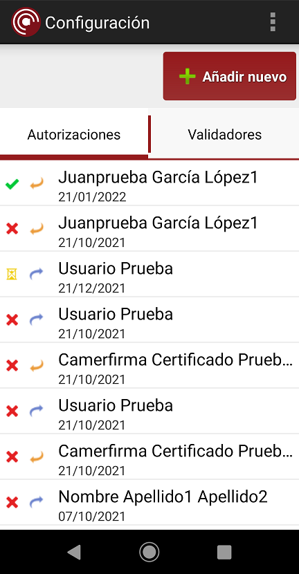
Al pulsar sobre una de las autorizaciones podremos ver el detalle de la misma: quien la envía o recibe, el estado, fecha de inicio y fin y descripción. En caso de tratarse de una autorización pendiente o activa, también aparecerán los botones que nos permitirán realizar las distintas opciones disponibles sobre ella:
-
Cancelar aquellas peticiones activas o las peticiones pendientes que hayamos enviado nosotros.
-
Aceptar o revocar las peticiones pendientes que nos hayan enviado.
<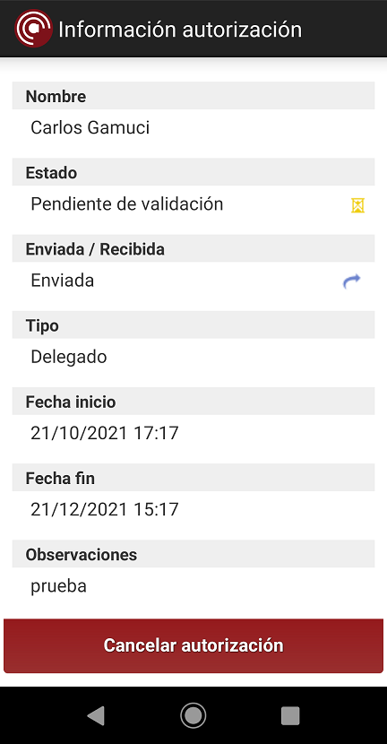 <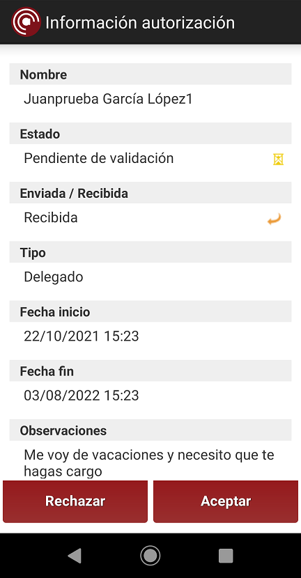
Se puede dar de alta una nueva autorización pulsando el botón “Añadir nuevo” cuando se esté mostrando el listado de autorizaciones. A continuación, se nos mostrará un buscador desde el que podremos buscar y seleccionar al usuario al que queremos autorizar. La búsqueda puede realizarse mediante nombre o DNI.
<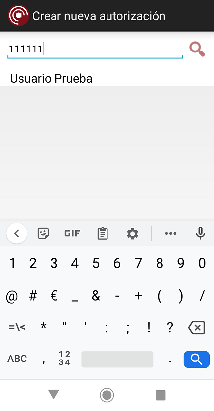
Una vez seleccionado el usuario, podremos configurar los datos relativos a la autorización:
-
Fecha y hora de inicio. Si no se indican, se utilizará la fecha y hora actuales.
-
Fecha y hora de caducidad. Si no se indican, la autorización no caducará.
-
Tipo de autorización: delegado o sustituto.
-
Observaciones opcionales.
<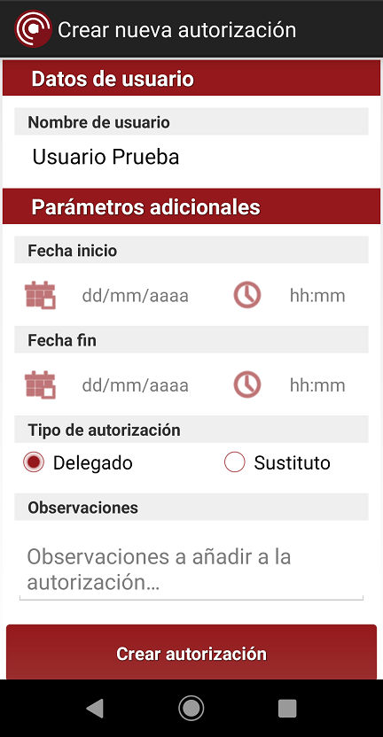
La autorización se crea al pulsar en el botón “Crear autorización”, pero no estará activa hasta que el usuario al que se ha enviado la acepte.
Gestión de validadores
El listado de validadores muestra los usuarios encargados de validar las peticiones que recibimos antes de que se nos muestren en nuestra bandeja de peticiones pendientes. El Portafirmas móvil no distingue entre validadores generales o aquellos que sólo gestionan aplicaciones concretas.
<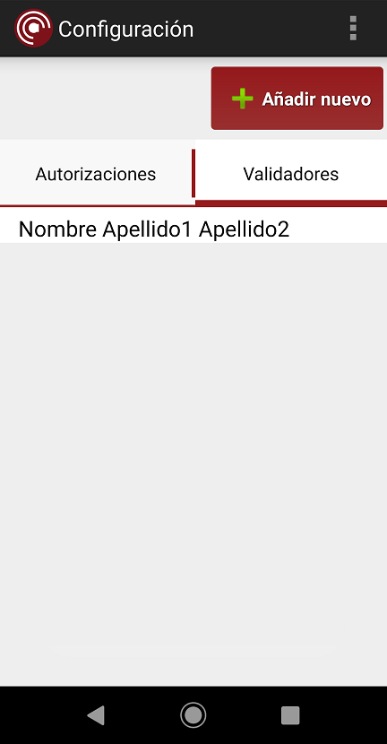
Se puede dar de alta a un nuevo validador pulsando el botón “Añadir nuevo” cuando se esté mostrando el listado de validadores. A continuación, se nos mostrará un buscador desde el que podremos buscar y seleccionar al usuario al que queremos nombrar validador. La búsqueda puede realizarse mediante nombre o DNI. Al pulsar sobre el usuario en cuestión, se nos pedirá confirmación para darlo de alta como validador.
< <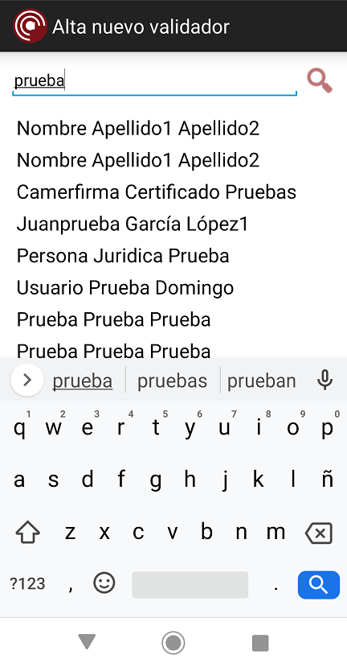
<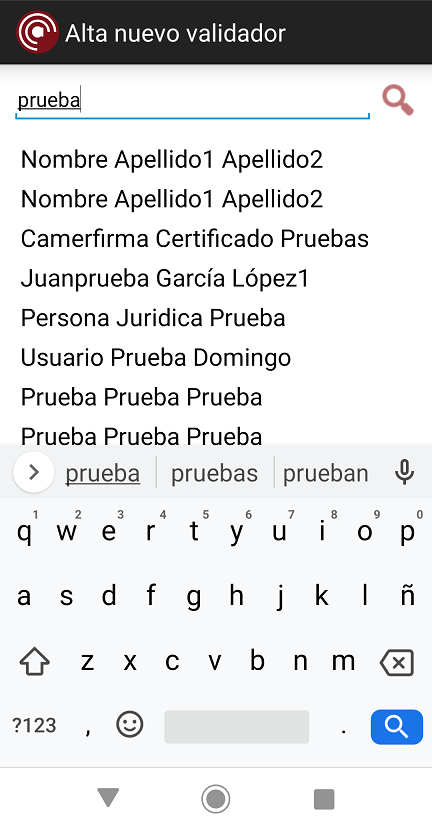
Podemos dar de baja a un validador con sólo pulsar sobre el mismo en el listado de validadores. Al hacerlo, se nos pedirá confirmación antes de darlo de baja.
Gestión del sistema de notificaciones
Cuando el servidor Portafirmas al que se conecte lo soporte, en el menú contextual de los listados de peticiones le aparecerá la opción “Habilitar notificaciones” o “Deshabilitar notificaciones”. En caso de habilitar esta opción, el usuario actual recibirá notificaciones en su dispositivo cada vez que reciba una nueva petición en el Portafirmas al que esté conectado.
<
Al pulsar sobre una de las notificaciones el usuario podrá acceder al portafirmas web en cuestión.
En caso de deshabilitarlas, se cancelará la subscripción al sistema de notificaciones.
Importar certificado de usuario
Para importar el certificado de usuario es necesario primero guardar el archivo del certificado en el sistema de ficheros. Este archivo debe contener la clave privada ya que se usará para firmar. En general la extensión de este fichero será .pfx o .p12. El archivo se puede copiar desde el ordenador conectando el dispositivo o se puede enviar como adjunto en un correo.
Con el archivo ya en el sistema de ficheros, pulsar en “Importar Certificado”. Se abrirá una nueva pantalla que permite recorrer las carpetas del sistema y localizar el archivo anterior. La pantalla del diálogo de selección de fichero puede variar según la versión de Android.
<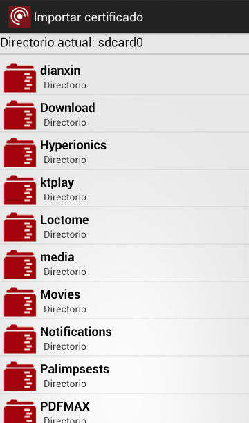
Seleccionamos el archivo, introducimos la clave que permite su uso y le asignamos un nombre que es el que se visualizará cuando queramos conectarnos al portafirmas:
<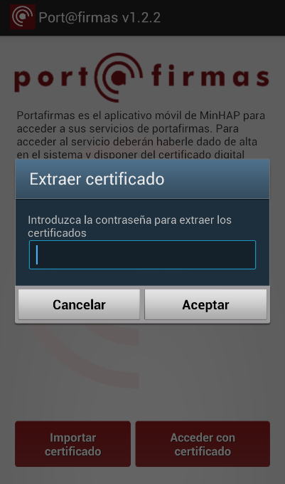 <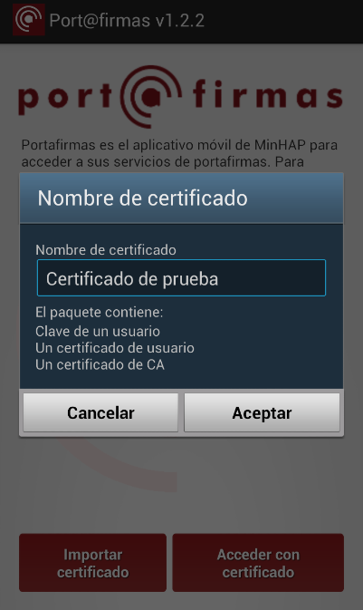
Al aceptar, el certificado se importa en el almacén del dispositivo y ya está listo para ser usado.
<
Esta obra está bajo una licencia.